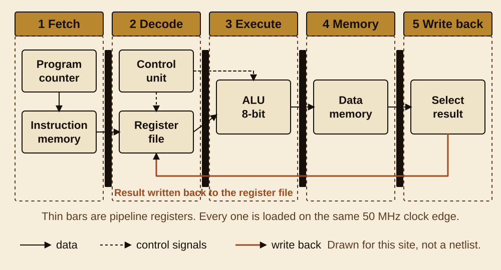
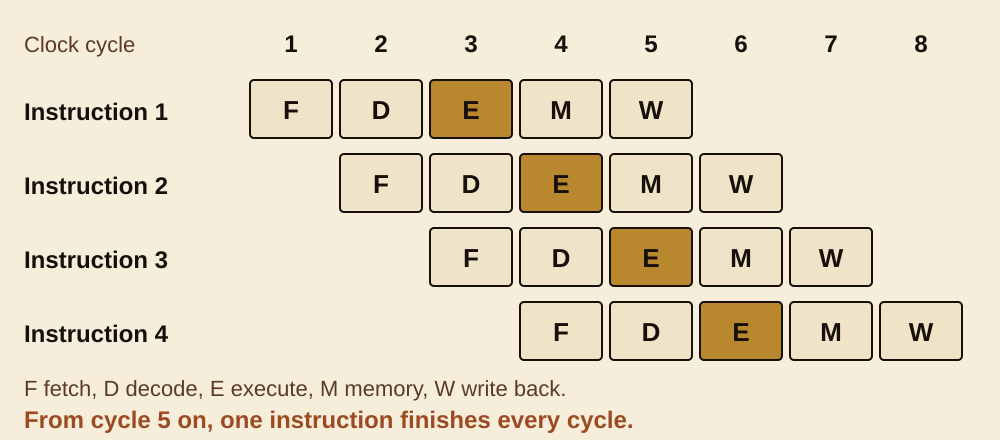
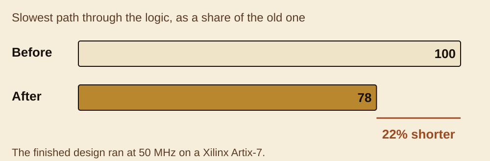

Hardware
8-bit RISC processor on FPGA
An 8-bit processor I designed in Verilog and ran on an FPGA.
- No public link.

In numbers
- 5pipeline stages
- 16instructions
- 50 MHzon a Xilinx Artix-7
- 22%shorter slowest path
- 40+tests
The problem
A processor does the same four things over and over. It fetches an instruction, works out what the instruction asks for, does the work, and keeps the result. If a design finishes all four before it starts the next instruction, most of the chip sits idle most of the time, and the clock can only run as fast as that whole chain allows.
The project was to build one from nothing: an 8-bit processor in Verilog, with a small instruction set, that runs on a real FPGA and not only in a simulator. The target was a Xilinx Artix-7 at 50 MHz.
The approach
I split the work into five stages and put a register between each pair, so five instructions can be in flight at once. That is a pipeline. The processor has 16 instructions and an 8-bit datapath, written in Verilog and built with Vivado.
- Fetch reads the next instruction from memory and moves the program counter on.
- Decode turns the instruction into control signals and reads the registers it names.
- Execute does the arithmetic or logic in the 8-bit ALU.
- Memory reads or writes data memory when the instruction needs it.
- Write back puts the result in the register file.
The stage names are the standard ones for this kind of design. The next section shows how the stages overlap.
How it works
The datapath is the diagram at the top of the page. Each box is a block of logic, and each thin bar is a pipeline register. Solid arrows carry data, dashed arrows carry control signals, and the brown line is the result going back to the register file. On every tick of the 50 MHz clock, every register takes in what the stage before it produced, so each instruction moves one stage to the right.
The timing grid shows why this is worth the trouble. Instruction 1 needs five cycles from start to finish. Instruction 2 starts one cycle later, instruction 3 one after that, and so on. Once the pipeline is full, one instruction finishes on every clock tick.

In the best case that is one instruction per cycle, which is 50 million a second at 50 MHz. Real programs do not always reach it. An instruction can need a result that an earlier one has not written yet, and a pipelined design has to deal with that. That is the kind of thing a long list of tests exists to catch.
Timing: the slowest path
The clock can only be as fast as the slowest stretch of logic between two registers. Everything else waits for it. I cut that path by 22%.

The Verilog is synthesised and placed by Vivado, which reports the slowest paths. That report is the guide: change the logic, run the tools again, and see whether the worst path moved.
Results
| Measure | Result |
|---|---|
| Word size | 8 bits |
| Pipeline | 5 stages |
| Instruction set | 16 instructions |
| Clock | 50 MHz on a Xilinx Artix-7 (a 20 ns period) |
| Slowest path | 22% shorter than before |
| Checking | 40+ tests |
There is no public repo or demo for this one, so the diagrams on this page are the picture of it.
What I did
- Designed an 8-bit processor in Verilog with a 5-stage pipeline and 16 instructions.
- Ran it at 50 MHz on a Xilinx Artix-7.
- Cut the slowest path by 22%.
- Checked it with 40+ tests.
What I learned
Speed is set by the worst case, not the average. One slow path held the whole clock back, so shortening that one path was worth more than polishing fast ones.
A pipeline trades simple instructions for tricky interactions between them. Tests are how you find those, so the 40+ tests were part of the design, not a step at the end.
Running on a real FPGA is different from a clean simulation. Timing reports from the tools are the truth about what will run at 50 MHz.